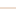
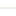

<!doctype html>
<html lang="en">
    <head>
        <meta charset="utf-8">
        <meta http-equiv="X-UA-Compatible" content="IE=edge">
        <meta name="viewport" content="initial-scale=1,user-scalable=no,maximum-scale=1,width=device-width">
        <meta name="mobile-web-app-capable" content="yes">
        <meta name="apple-mobile-web-app-capable" content="yes">
        <link rel="stylesheet" href="css/leaflet.css">
        <link rel="stylesheet" href="css/L.Control.Layers.Tree.css">
        <link rel="stylesheet" href="css/qgis2web.css">
        <link rel="stylesheet" href="css/fontawesome-all.min.css">
        <link rel="stylesheet" href="css/leaflet-control-geocoder.Geocoder.css">
        <link rel="stylesheet" href="css/leaflet-measure.css">
        <style>
        html, body, #map {
            width: 100%;
            height: 100%;
            padding: 0;
            margin: 0;
        }
        </style>
        <title></title>
    </head>
    <body>
        <div id="map">
        </div>
        <script src="js/qgis2web_expressions.js"></script>
        <script src="js/leaflet.js"></script>
        <script src="js/L.Control.Layers.Tree.min.js"></script>
        <script src="js/leaflet.rotatedMarker.js"></script>
        <script src="js/leaflet.pattern.js"></script>
        <script src="js/leaflet-hash.js"></script>
        <script src="js/Autolinker.min.js"></script>
        <script src="js/rbush.min.js"></script>
        <script src="js/labelgun.min.js"></script>
        <script src="js/labels.js"></script>
        <script src="js/leaflet-control-geocoder.Geocoder.js"></script>
        <script src="js/leaflet-measure.js"></script>
        <script src="data/BatasKebun_5.js"></script>
        <script src="data/contour_minor_6.js"></script>
        <script src="data/contour_mayor_7.js"></script>
        <script>
        var highlightLayer;
        function highlightFeature(e) {
            highlightLayer = e.target;

            if (e.target.feature.geometry.type === 'LineString' || e.target.feature.geometry.type === 'MultiLineString') {
              highlightLayer.setStyle({
                color: '#ffff00',
              });
            } else {
              highlightLayer.setStyle({
                fillColor: '#ffff00',
                fillOpacity: 1
              });
            }
            highlightLayer.openPopup();
        }
        var map = L.map('map', {
            zoomControl:false, maxZoom:23, minZoom:10
        })
        var hash = new L.Hash(map);
        map.attributionControl.setPrefix('<a href="https://github.com/tomchadwin/qgis2web" target="_blank">qgis2web</a> &middot; <a href="https://leafletjs.com" title="A JS library for interactive maps">Leaflet</a> &middot; <a href="https://qgis.org">QGIS</a>');
        var autolinker = new Autolinker({truncate: {length: 30, location: 'smart'}});
        // remove popup's row if "visible-with-data"
        function removeEmptyRowsFromPopupContent(content, feature) {
         var tempDiv = document.createElement('div');
         tempDiv.innerHTML = content;
         var rows = tempDiv.querySelectorAll('tr');
         for (var i = 0; i < rows.length; i++) {
             var td = rows[i].querySelector('td.visible-with-data');
             var key = td ? td.id : '';
             if (td && td.classList.contains('visible-with-data') && feature.properties[key] == null) {
                 rows[i].parentNode.removeChild(rows[i]);
             }
         }
         return tempDiv.innerHTML;
        }
        // add class to format popup if it contains media
		function addClassToPopupIfMedia(content, popup) {
			var tempDiv = document.createElement('div');
			tempDiv.innerHTML = content;
			if (tempDiv.querySelector('td img')) {
				popup._contentNode.classList.add('media');
					// Delay to force the redraw
					setTimeout(function() {
						popup.update();
					}, 10);
			} else {
				popup._contentNode.classList.remove('media');
			}
		}
        var zoomControl = L.control.zoom({
            position: 'topleft'
        }).addTo(map);
        var measureControl = new L.Control.Measure({
            position: 'topleft',
            primaryLengthUnit: 'feet',
            secondaryLengthUnit: 'miles',
            primaryAreaUnit: 'sqfeet',
            secondaryAreaUnit: 'sqmiles'
        });
        measureControl.addTo(map);
        document.getElementsByClassName('leaflet-control-measure-toggle')[0].innerHTML = '';
        document.getElementsByClassName('leaflet-control-measure-toggle')[0].className += ' fas fa-ruler';
        var bounds_group = new L.featureGroup([]);
        function setBounds() {
            if (bounds_group.getLayers().length) {
                map.fitBounds(bounds_group.getBounds());
            }
        }
        map.createPane('pane_OpenStreetMap_0');
        map.getPane('pane_OpenStreetMap_0').style.zIndex = 400;
        var layer_OpenStreetMap_0 = L.tileLayer('https://tile.openstreetmap.org/{z}/{x}/{y}.png', {
            pane: 'pane_OpenStreetMap_0',
            opacity: 1.0,
            attribution: '',
            minZoom: 10,
            maxZoom: 23,
            minNativeZoom: 0,
            maxNativeZoom: 19
        });
        layer_OpenStreetMap_0;
        map.addLayer(layer_OpenStreetMap_0);
        map.createPane('pane_GoogleSatellite_1');
        map.getPane('pane_GoogleSatellite_1').style.zIndex = 401;
        var layer_GoogleSatellite_1 = L.tileLayer('https://mt0.google.com/vt/lyrs=s&x={x}&y={y}&z={z}', {
            pane: 'pane_GoogleSatellite_1',
            opacity: 1.0,
            attribution: '',
            minZoom: 10,
            maxZoom: 23,
            minNativeZoom: 0,
            maxNativeZoom: 20
        });
        layer_GoogleSatellite_1;
        map.createPane('pane_Topografi_2');
        map.getPane('pane_Topografi_2').style.zIndex = 402;
        var img_Topografi_2 = 'data/Topografi_2.png';
        var img_bounds_Topografi_2 = [[-7.135785049129933,107.46903611980291],[-7.1262660371465385,107.47436575416981]];
        var layer_Topografi_2 = new L.imageOverlay(img_Topografi_2,
                                              img_bounds_Topografi_2,
                                              {pane: 'pane_Topografi_2'});
        bounds_group.addLayer(layer_Topografi_2);
        map.addLayer(layer_Topografi_2);
        map.createPane('pane_Slope_3');
        map.getPane('pane_Slope_3').style.zIndex = 403;
        var img_Slope_3 = 'data/Slope_3.png';
        var img_bounds_Slope_3 = [[-7.135785049129933,107.46903611980291],[-7.1262660371465385,107.47436575416981]];
        var layer_Slope_3 = new L.imageOverlay(img_Slope_3,
                                              img_bounds_Slope_3,
                                              {pane: 'pane_Slope_3'});
        bounds_group.addLayer(layer_Slope_3);
        map.createPane('pane_HillShade_4');
        map.getPane('pane_HillShade_4').style.zIndex = 404;
        var img_HillShade_4 = 'data/HillShade_4.png';
        var img_bounds_HillShade_4 = [[-7.135785049129933,107.46903611980291],[-7.1262660371465385,107.47436575416981]];
        var layer_HillShade_4 = new L.imageOverlay(img_HillShade_4,
                                              img_bounds_HillShade_4,
                                              {pane: 'pane_HillShade_4'});
        bounds_group.addLayer(layer_HillShade_4);
        map.addLayer(layer_HillShade_4);
        function pop_BatasKebun_5(feature, layer) {
            layer.on({
                mouseout: function(e) {
                    for (var i in e.target._eventParents) {
                        if (typeof e.target._eventParents[i].resetStyle === 'function') {
                            e.target._eventParents[i].resetStyle(e.target);
                        }
                    }
                    if (typeof layer.closePopup == 'function') {
                        layer.closePopup();
                    } else {
                        layer.eachLayer(function(feature){
                            feature.closePopup()
                        });
                    }
                },
                mouseover: highlightFeature,
            });
            var popupContent = '<table>\
                    <tr>\
                        <td colspan="2">' + (feature.properties['Id'] !== null ? autolinker.link(feature.properties['Id'].toLocaleString()) : '') + '</td>\
                    </tr>\
                </table>';
            var content = removeEmptyRowsFromPopupContent(popupContent, feature);
			layer.on('popupopen', function(e) {
				addClassToPopupIfMedia(content, e.popup);
			});
			layer.bindPopup(content, { maxHeight: 400 });
        }

        function style_BatasKebun_5_0() {
            return {
                pane: 'pane_BatasKebun_5',
                opacity: 1,
                color: 'rgba(25,207,177,1.0)',
                dashArray: '',
                lineCap: 'butt',
                lineJoin: 'miter',
                weight: 2.0, 
                fill: true,
                fillOpacity: 1,
                fillColor: 'rgba(255,255,255,0.0)',
                interactive: false,
            }
        }
        map.createPane('pane_BatasKebun_5');
        map.getPane('pane_BatasKebun_5').style.zIndex = 405;
        map.getPane('pane_BatasKebun_5').style['mix-blend-mode'] = 'normal';
        var layer_BatasKebun_5 = new L.geoJson(json_BatasKebun_5, {
            attribution: '',
            interactive: false,
            dataVar: 'json_BatasKebun_5',
            layerName: 'layer_BatasKebun_5',
            pane: 'pane_BatasKebun_5',
            onEachFeature: pop_BatasKebun_5,
            style: style_BatasKebun_5_0,
        });
        bounds_group.addLayer(layer_BatasKebun_5);
        map.addLayer(layer_BatasKebun_5);
        function pop_contour_minor_6(feature, layer) {
            layer.on({
                mouseout: function(e) {
                    for (var i in e.target._eventParents) {
                        if (typeof e.target._eventParents[i].resetStyle === 'function') {
                            e.target._eventParents[i].resetStyle(e.target);
                        }
                    }
                    if (typeof layer.closePopup == 'function') {
                        layer.closePopup();
                    } else {
                        layer.eachLayer(function(feature){
                            feature.closePopup()
                        });
                    }
                },
                mouseover: highlightFeature,
            });
            var popupContent = '<table>\
                    <tr>\
                        <td colspan="2">' + (feature.properties['Id'] !== null ? autolinker.link(feature.properties['Id'].toLocaleString()) : '') + '</td>\
                    </tr>\
                    <tr>\
                        <td colspan="2">' + (feature.properties['Contour'] !== null ? autolinker.link(feature.properties['Contour'].toLocaleString()) : '') + '</td>\
                    </tr>\
                    <tr>\
                        <td colspan="2">' + (feature.properties['Shape_Leng'] !== null ? autolinker.link(feature.properties['Shape_Leng'].toLocaleString()) : '') + '</td>\
                    </tr>\
                </table>';
            var content = removeEmptyRowsFromPopupContent(popupContent, feature);
			layer.on('popupopen', function(e) {
				addClassToPopupIfMedia(content, e.popup);
			});
			layer.bindPopup(content, { maxHeight: 400 });
        }

        function style_contour_minor_6_0() {
            return {
                pane: 'pane_contour_minor_6',
                opacity: 1,
                color: 'rgba(107,64,8,1.0)',
                dashArray: '',
                lineCap: 'square',
                lineJoin: 'bevel',
                weight: 1,
                fillOpacity: 0,
                interactive: false,
            }
        }
        map.createPane('pane_contour_minor_6');
        map.getPane('pane_contour_minor_6').style.zIndex = 406;
        map.getPane('pane_contour_minor_6').style['mix-blend-mode'] = 'normal';
        var layer_contour_minor_6 = new L.geoJson(json_contour_minor_6, {
            attribution: '',
            interactive: false,
            dataVar: 'json_contour_minor_6',
            layerName: 'layer_contour_minor_6',
            pane: 'pane_contour_minor_6',
            onEachFeature: pop_contour_minor_6,
            style: style_contour_minor_6_0,
        });
        bounds_group.addLayer(layer_contour_minor_6);
        function pop_contour_mayor_7(feature, layer) {
            layer.on({
                mouseout: function(e) {
                    for (var i in e.target._eventParents) {
                        if (typeof e.target._eventParents[i].resetStyle === 'function') {
                            e.target._eventParents[i].resetStyle(e.target);
                        }
                    }
                    if (typeof layer.closePopup == 'function') {
                        layer.closePopup();
                    } else {
                        layer.eachLayer(function(feature){
                            feature.closePopup()
                        });
                    }
                },
                mouseover: highlightFeature,
            });
            var popupContent = '<table>\
                    <tr>\
                        <td colspan="2">' + (feature.properties['Id'] !== null ? autolinker.link(feature.properties['Id'].toLocaleString()) : '') + '</td>\
                    </tr>\
                    <tr>\
                        <th scope="row">Contour</th>\
                        <td>' + (feature.properties['Contour'] !== null ? autolinker.link(feature.properties['Contour'].toLocaleString()) : '') + '</td>\
                    </tr>\
                    <tr>\
                        <td colspan="2">' + (feature.properties['Shape_Leng'] !== null ? autolinker.link(feature.properties['Shape_Leng'].toLocaleString()) : '') + '</td>\
                    </tr>\
                </table>';
            var content = removeEmptyRowsFromPopupContent(popupContent, feature);
			layer.on('popupopen', function(e) {
				addClassToPopupIfMedia(content, e.popup);
			});
			layer.bindPopup(content, { maxHeight: 400 });
        }

        function style_contour_mayor_7_0() {
            return {
                pane: 'pane_contour_mayor_7',
                opacity: 1,
                color: 'rgba(162,73,0,0.792)',
                dashArray: '',
                lineCap: 'square',
                lineJoin: 'bevel',
                weight: 1,
                fillOpacity: 0,
                interactive: true,
            }
        }
        map.createPane('pane_contour_mayor_7');
        map.getPane('pane_contour_mayor_7').style.zIndex = 407;
        map.getPane('pane_contour_mayor_7').style['mix-blend-mode'] = 'normal';
        var layer_contour_mayor_7 = new L.geoJson(json_contour_mayor_7, {
            attribution: '',
            interactive: true,
            dataVar: 'json_contour_mayor_7',
            layerName: 'layer_contour_mayor_7',
            pane: 'pane_contour_mayor_7',
            onEachFeature: pop_contour_mayor_7,
            style: style_contour_mayor_7_0,
        });
        bounds_group.addLayer(layer_contour_mayor_7);
        var osmGeocoder = new L.Control.Geocoder({
            collapsed: true,
            position: 'topleft',
            text: 'Search',
            title: 'Testing'
        }).addTo(map);
        document.getElementsByClassName('leaflet-control-geocoder-icon')[0]
        .className += ' fa fa-search';
        document.getElementsByClassName('leaflet-control-geocoder-icon')[0]
        .title += 'Search for a place';
        var overlaysTree = [
            {label: ' contour_mayor', layer: layer_contour_mayor_7},
            {label: ' contour_minor', layer: layer_contour_minor_6},
            {label: ' Batas Kebun', layer: layer_BatasKebun_5},
            {label: "HillShade", layer: layer_HillShade_4},
            {label: "Slope", layer: layer_Slope_3},
            {label: "Topografi", layer: layer_Topografi_2},
            {label: "Google Satellite", layer: layer_GoogleSatellite_1},
            {label: "OpenStreetMap", layer: layer_OpenStreetMap_0},]
        var lay = L.control.layers.tree(null, overlaysTree,{
            //namedToggle: true,
            //selectorBack: false,
            //closedSymbol: '&#8862; &#x1f5c0;',
            //openedSymbol: '&#8863; &#x1f5c1;',
            //collapseAll: 'Collapse all',
            //expandAll: 'Expand all',
            collapsed: true,
        });
        lay.addTo(map);
        setBounds();
        var i = 0;
        layer_contour_mayor_7.eachLayer(function(layer) {
            var context = {
                feature: layer.feature,
                variables: {}
            };
            layer.bindTooltip((layer.feature.properties['Contour'] !== null?String('<div style="color: #323232; font-size: 5pt; font-family: \'Open Sans\', sans-serif;">' + layer.feature.properties['Contour']) + '</div>':''), {permanent: true, offset: [-0, -16], className: 'css_contour_mayor_7'});
            labels.push(layer);
            totalMarkers += 1;
              layer.added = true;
              addLabel(layer, i);
              i++;
        });
        L.ImageOverlay.include({
            getBounds: function () {
                return this._bounds;
            }
        });
        resetLabels([layer_contour_minor_6,layer_contour_mayor_7]);
        map.on("zoomend", function(){
            resetLabels([layer_contour_minor_6,layer_contour_mayor_7]);
        });
        map.on("layeradd", function(){
            resetLabels([layer_contour_minor_6,layer_contour_mayor_7]);
        });
        map.on("layerremove", function(){
            resetLabels([layer_contour_minor_6,layer_contour_mayor_7]);
        });
        </script>
    </body>
</html>
